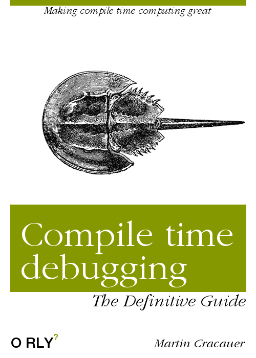

Давайте сосредоточимся на хитрости, которую мы внедрили в макрос, чтобы угодить программистам на C, приняв «int» в качестве спецификатора типа. Эти хаки всегда являются началом интересных сеансов отладки.
(defmacro defunt (name (&rest args) &body body)
"defun with optional type declarations"
`(progn
(declaim (ftype
(function
,(let (declares)
(dolist (arg args)
(push
(if (listp arg)
;; <== HACK HERE, with typo
(if (equalp (string (first arg)) "intt")
'fixnum
(first arg))
t)
declares))
declares)
t) ,name))...)
Как видите, сравнение пользовательской строки требует тщательного выбора преобразований и правильного оператора сравнения. Допустим, у вас есть проблема в том, что сравнение никогда не подходит, и вы хотите это отладить.
Первое, что нужно сделать - это macroexpand:
(macroexpand '(defunt meh5 ((int p1) p2) (+ p1 p2))) ==> (PROGN (DECLAIM (FTYPE (FUNCTION (T INT) T) MEH5)) (DEFUN MEH5 (P1 P2) (+ P1 P2)))
Хорошо, но это мало что нам говорит. В нем говорится, что int не был распознан, но мы не знаем почему.
Теперь, когда в нашем распоряжении есть весь язык во время компиляции, мы можем использовать отладочную печать:
(defmacro defunt (name (&rest args) &body body)
"defun with optional type declarations"
`(progn
(declaim (ftype
(function
,(let (declares)
(dolist (arg args)
(push
(if (listp arg)
;; <== HACK HERE, with typo
(if (equalp (string (print (first arg))) "intt")
'fixnum
(first arg))
t)
declares))
declares)
t) ,name))...)
Поэтому мы просто помещаем (печать …) вокруг значения, о котором хотим знать. Оно будет напечатано во время макрорасширения. (print…) возвращает собственный аргумент, поэтому вы можете просто вставить его в поток программы.
(format t "~%debug args: ~a ~a" arg (type-of arg))
(if (listp arg)
;; <== HACK HERE, with typo
;;(if (equalp (string (print (first arg))) "intt")
Это использует фактический оператор printf и дает вам как значение, так и тип аргумента.
(macroexpand '(defunt meh5 ((int p1) p2) (+ p1 p2))) ==> debug args: (INT P1) CONS debug args: P2 SYMBOL ;; expansion follows
Таким образом, вы можете аннотировать поток макроса по своему усмотрению. У вас есть полный язык.
Эта печать во время вызова макроса никак не влияет на результат. Независимо от того, есть ли у вас оператор отладки в макросе или нет, результат правильно передается в компилятор, в то время как операторы печати отладки просто переходят(выводят) в stdout, stderr или debugerr или что-то еще, что вы указали.
Фактически, вы также можете открыть файл во время компиляции и поместить в него все операторы печати из макрорасширения для дальнейшего использования.
(defvar *expandlog* nil)
(setf *expandlog*
(open "expand.log" :direction :output
:if-does-not-exist :create
:if-exists :append))
(defmacro defunt (name (&rest args) &body body)
"defun with optional type declarations"
`(progn
(declaim (ftype
(function
,(let (declares)
(dolist (arg args)
(format *expandlog*
"~%debug args: ~a ~a"
arg (type-of arg))
(push
(if (listp arg)
Вы можете сделать это миллионами разных способов. Например, если вам нужен журнал только для некоторых вызовов макросов:
(defvar *expandlog* nil)
(defmacro defunt (name (&rest args) &body body)
;; as above)
;; use macro without logfile printing
(defunt2 meh6a (p1 p2)
(+ p1 p2));; use macro with logfile printing
(setf *expandlog*
(open "expand.log" :direction :output
:if-does-not-exist :create
:if-exists :append))
(defunt2 meh6b ((int p1) p2)
(+ p1 p2)))
(close *expandlog*)
;; important. (format nil ...) works fine, print nothing
;; (format closedfd ...) does not work
(setf *expandlog* nil)
file âexpand.logâ contains:
debug args: (INT P1) CONS debug args: P2 SYMBOL
Это только результат второго вызова meh6b, чего мы и хотим.
Было бы лучше поместить (if *expandlog* (format *expandlog*…) в макрос defunt2. (format nil …) работает, но выполняет форматирование, а затем отправляет его в /dev/null. Форматирование может стоить Имейте в виду, что это время берется не во время выполнения, а во время макрорасширения. Пользователь не пострадает от замедления, только ленивый программист.
Поскольку (format meh …) не работает, когда meh не является ни открытым, ни рабочим дескриптором файла, ни nil, ни t, вы должны защитить это в блоке, который гарантирует, что некоторые операторы будут выполняться, даже если произойдет нелокальный выход. Это эквивалентно предложениям :finally в других языках обработки:
(unwind-protect
(progn
;; protected body
(setf *expandlog*
(open "expand.log" :direction :output
:if-does-not-exist :create
:if-exists :append))
(defunt2 meh6b ((int p1) p2)
(+ p1 p2)))
(progn
;; these statements will be executed no matter what.
;; If the protected body has a nonlocal exit (throws
;; an exception through here, or if you interrupt
;; it with Control-C then these statements are still
;; executed like in a "finally" clause
(close *expandlog*)
(setf *expandlog* nil)
Итак, да, у вас есть полный язык во время компиляции, даже обработка исключений во время компиляции.
(declaim (ftype (function (fixnum fixnum) fixnum) moo1)
(inline moo1))
(defun moo1 (p1 p2)
(+ p1 p2))
(defun caller1 ()
(let ((n 42)
(new (+ (moo1 1
;; disable compiler optimization
(the fixnum
(parse-integer "2"))))))
(declare (fixnum n new))
(if (= new 45)
(print 'yes)
(print 'no))))
Yes, Master? CL-USER> (disassemble 'caller1) ; disassembly for CALLER1 ; Size: 78 bytes. Origin: #x52E3FF56 ; 56: 4883EC10 SUB RSP, 16 ; no-arg-parsing entry point ; 5A: 488B158FFFFFFF MOV RDX, [RIP-113] ; "2" ; 61: B902000000 MOV ECX, 2 ; 66: 48892C24 MOV [RSP], RBP ; 6A: 488BEC MOV RBP, RSP ; 6D: E8065BE6FF CALL #x52CA5A78 ; #<FDEFN PARSE-INTEGER> ; 72: 4883C202 ADD RDX, 2 ; 76: 4883FA5A CMP RDX, 90 ; 7A: 7514 JNE L0 ; 7C: 488B157DFFFFFF MOV RDX, [RIP-131] ; 'YES ; 83: B902000000 MOV ECX, 2 ; 88: FF7508 PUSH QWORD PTR [RBP+8] ; 8B: E94831EBFF JMP #x52CF30D8 ; #<FDEFN PRINT> ; 90: L0: 488B1579FFFFFF MOV RDX, [RIP-135] ; 'NO ; 97: B902000000 MOV ECX, 2 ; 9C: FF7508 PUSH QWORD PTR [RBP+8] ; 9F: E93431EBFF JMP #x52CF30D8 ; #<FDEFN PRINT> NIL Yes, Master? CL-USER>
О том, чего мы ожидали. Игнорируйте вызовы функций, чтобы преобразовать целое число, и посмотрите на фактическую арифметику. Выглядит хорошо.
Обратите внимание, что хотя SBCL обычно использует биты тегов для идентификации целых чисел, в этой ситуации не используется тегирование типов, поскольку ни одно из задействованных целых чисел не экранирует эту функцию. Так что это сырые машинные работы, без тегов. Если они поступают как параметры или выходят как возвращаемые значения, их нужно будет пометить.
Это может быть очень важно, и я имею в виду импорт для построения бизнеса, когда ваш код на Лиспе хочет получить доступ к данным C в области отображения памяти. Скажем:
struct foo {
int bar;
int baz;
} array[1024];
SBCL и Clasp могут получить доступ к этим слотам в своих экземплярах структуры внутри этого массива с помощью простого указателя, а затем с помощью машинного слова. Здесь нет преобразования и, что более важно, нет необходимости создавать какую-либо оболочку для «посторонних объектов», которая должна была бы выполнять выделение памяти и тому подобное. Языки очень редко могут получить доступ к необработанным данным в областях памяти таким образом. В большинстве случаев план «писать низкоуровневые части на C и алгоритмы более высокого уровня в <foolang> терпит неудачу из-за необходимости конвертировать данные C, в большинстве случаев вовлекая что-то, что вызывает выделение памяти. Это очень медленно. Вызов malloc или эквивалентные GC alloc и dealloc невероятно дороже, чем определение указателя и арифметические операции с необработанным словом.
Вы не можете создать эти смешанные языковые системы так, как это сделала ITA с QPX (данные C, алгоритм Lisp), без доступа к исходным словам без накладных расходов. Даже необходимость выполнения вызова функции (в отличие от простого разыменования) возвращает вас на порядок назад.